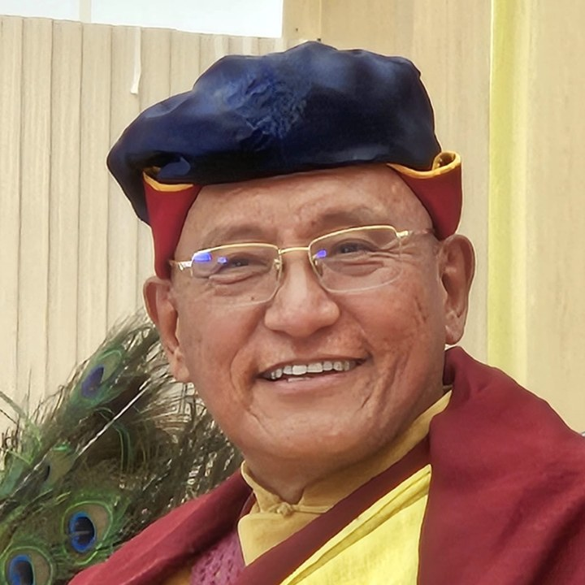

Sa Sainteté le 12e Gyalwang Drukpa
Chef spirituel de la Lignée Drukpa
Sa Sainteté le 12e Gyalwang Drukpa est le chef spirituel de la Glorieuse Lignée Drukpa. Maître authentique et accompli, Sa Sainteté incarne par sa modernité, sa simplicité et la profondeur de ses enseignements la pure tradition de la Lignée des Yogis.